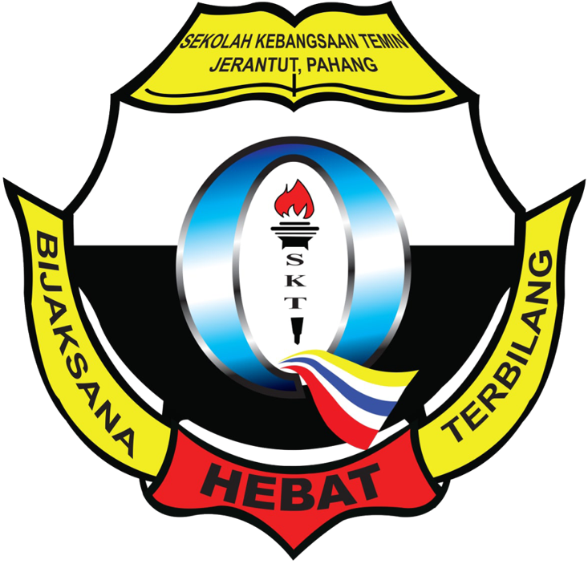

SAP
-TEMIN
Sistem Analisis Peperiksaan & Pentaksiran SK TEMIN
v3.2.12
?
☾
PUSAT ANALISIS SEKOLAH
SK TEMIN · ANALISIS AKADEMIK
Segar semula
Menyediakan paparan…
Penapis
⌄
Sesi
Pentaksiran
Pilih pentaksiran
Tahun
Semua tahun
Kelas
Semua kelas
Subjek
Semua subjek
Semua subjek
4 subjek teras
Pemilihan KRK
Ranking biasa
KRK: minimum C 6 subjek (PI jika ditanda)
Susunan
A teras → SEJ/RBT → PI → elektif
Nama A–Z
TP6 terbanyak, kemudian TP5 hingga TP1
Reset penapis
Utama
Murid
Analisis
Intervensi
Laporan
Maklumat
×